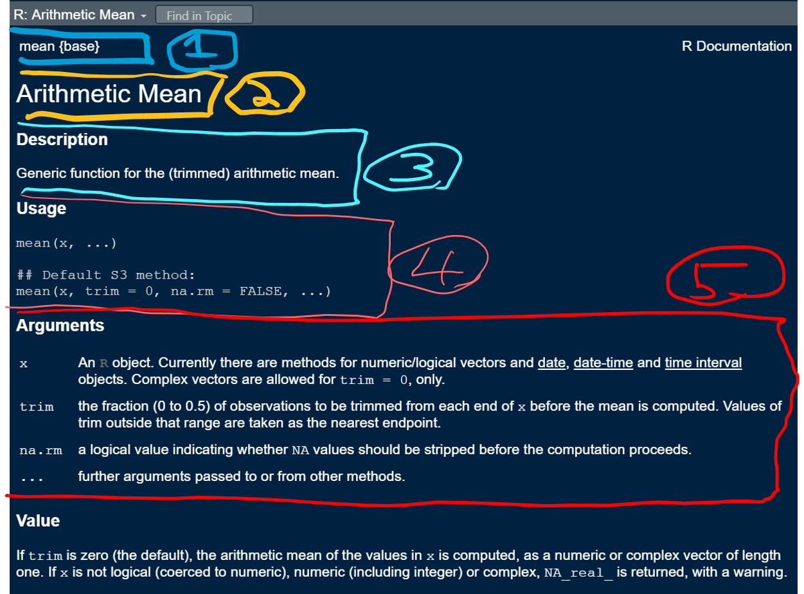

1 R Syntax basics (R as a passive-aggressive butler)
We love the R language, but sometimes it is a little bit like talking to a passive aggressive butler - if you aren’t careful with your language, the interaction may have unexpected outcomes…
R is a very popular statistical programming language and open source software design to help scientists and other non-programmers perform statistical analyses and to make great graphs. This page is intended to guide people through some of the basics of the R programming language, just enough to get started. We hope that these pages help make learning R simple (though it can difficult at times while you are learning)
1.1 Objectives
Here is what we will work on:
Example script, comments, help, pseudocode
Math operators
Logical Boolean operators
Regarding “base R” and the Tidyverse
Practice exercises
2 Example script, comments, help, pseudocode
The most important thing to keep in mind right at the beginning of learning R is to view the script as something you are writing to document a piece of work (e.g. progress in a workshop like this, an analysis, a research project, etc.). Organizing every script you write is extremely important to build “good habits” for reproducibility of your work. A good guideline for best practice in writing scripts is to pretend you are writing the script, comments and contents, for a respected colleague - someone who you respect and want to impress, but might not be able to explain in person about the purpose of the script (even if this is your future self).
To get the most out of this page, we strongly recommend that you:
Work through the instructions here while using R and RStudio as you go along.
Type you own code rather than using copy and paste
Document all the code in your own script and write clear, concise comments
Save it in a logical place on your computer. Open it in RStudio.
Right at the top you should see the HEADER.
## HEADER ###### Who: <YOUR NAME>## What: 2 R language basics## Last edited: <DATE TODAY in yyyy-mm-dd format)####
Go ahead and fill in the header with your own information.
Next you should see the CONTENTS section. The idea here is for you to list the CONTENTS of a script that can act as a roadmap to the user, but that can also help organize a large project into manageable chunks. Each title under the CONTENTS section will become the title in a code chunk below. You should see the contents section in the script you downloaded like this:
## CONTENTS ###### 2 Example script, help, pseudocode ## 3 Math operators ## 4 Logical Boolean operators ## 5 Regarding base R and the Tidyverse ## 6 Practice exercises
Each item in the CONTENTS section will become the title of individual code chunks. RStudio recognizes code chunks that have a particular syntax:
Code chunks begin with 2 “##” signs (1 works too, we prefer 2)
Code chunks end with at least 4 “####” signs
The first code chunk should already be placed in your script
## 2 Example script, help, pseudocode ####
2.2 Help
One of the great things about using R is the community and the spirit of helping others. However, there are so many websites, books, blogs and other resources that it can be overwhelming. Best practice is to learn to use the R Help system first, then seek help elsewhere.
The basic way to access the built-in help in R, is to use the help() function, with the name of tool you need help using inside the brackets. For example, to calculate the mean of some numbers, we would use the function mean(), and to display the help for the mean() function we would run. Run the following code in your own script:
# Display help page for the function meanhelp(mean)
You should see:

Mean help page (pun intended)
Does this help look mean enough?
Let’s orient to the information that is here because the help pages are essential to understand and every help page on every subject is organised in exactly the same way (and we will practice a lot using them).
1 Function name {Package name} This field let’s you know what “R package” the function belongs to. We can ignore this for now, but it can be very useful.
2 Short description This tells you in a few words what the function does.
3 (longer) description This gives a longer description of what the function does
4 Usage This usually gives an example of the function in use and lists the “arguments” that you are required to supply to the function for it to work on. Of course, you need to know about the arguments…
5 Argument definitions This field tells you what the argument are and do!
2.3 Deeper help
Using the Usage and Argument fields, we can figure out how to make the function do the work we want.
# Under Usage:# mean(x, ...)# The "x" is an argument that is required# The "..." means there are other optional arguments# Under Arguments:# x # An R object... for numeric/logical vectors ...# try this code in your own scriptmy_length <-c(101, 122, 97) # 3 numerical measuresmean(x = my_length)
2.4 Pseudocode
The idea of pseudocode is to break up a big task into a series of smaller tasks. An example of a task might be ANALYZE YOUR DATA (in shouty capitals because it is a big task). To accomplish this task, we might have to walk through a series of steps, e.g.,
Analyze your data:
Read data into R
Test assumption for statistical testing
Graph the data
Perform statistical test
Organize outputs to communicate in report
It is often a good idea to break down a task into pseudocode both to organize and document the methods in a logical way, but also to conceptually simplify a problem that is difficult to solve. Practically, the items in a typical table of contents in an R script might be similar to psuedocode. Note that this technique extends very well to any problem, not just R code and programming.
E.g., what steps would be involved in a problem like: Send a rocket with people in it to Mars such that they survive and return to Earth.
3 Math operators
Basic manipulation of numbers in R is very easy to do and is so intuitive that you may be able to guess what they are and what they do. There are just a few specifics that we will practice. This list is not exhaustive; the goal is to get enough to begin practicing.
3.1 Arithmetic
Try these in your practice script:
# There are a few others, but these are the basics# Add with "+"2+5# Subtract with "-"10-15# Multiply with "*"6*4.2# Divide by "/"10/4# raise to the power of x2^39^(1/2) # same as sqrt()!
Your output should look similar to this:
# There are a few others, but these are the basics# Add with "+"2+5
[1] 7
# Subtract with "-"10-15
[1] -5
# Multiply with "*"6*4.2
[1] 25.2
# Divide by "/"10/4
[1] 2.5
# raise to the power of x2^3
[1] 8
9^(1/2) # same as sqrt()!
[1] 3
Order of operation
The “order of operation” refers to the order in which mathematical calculations are carried out. A phrase like 2 + 2 is simple, but we need to consider order for more complicated phrases like 2 + 2 * 8 - 6. In general multiplication and division are carried out before addition and subtraction unless specific order is coded.
# Try this4+2*3# Order control - same4+ (2*3)# Order control - different...(4+2) *3
3.2 Use of spaces
In some cases, the use of spaces does not matter in the R language. Which one of the following ways of writing math operation might be easier to document and read?
# Try this6+10# no spaces7-5# uneven spaces1.6/2.3# large spaces16*3# exactly 1 space# exactly 1 space is probably easiest to read...
Your output should look like this:
# Try this6+10# no spaces
[1] 16
7-5# uneven spaces
[1] 2
1.6/2.3# large spaces
[1] 0.6956522
16*3# exactly 1 space
[1] 48
4 Logical “Boolean” operators
Boolean operators are expressions that resolve TRUE (treated as 1 in most computing systems including R) versus FALSE (0). A typical expression might be something like asking if 5 > 3, which is TRUE. More sophisticated phrases are possible, and sometimes useful.
4.1 Boolean example
# Try this# simplest example3>5# 3 is compared to each element3<c(1, 2, 3, 4, 5, 6) # Logic and math# & (ampersand) means "and"# | (pipe) means "or"# This asks if both phrases are true (true AND true)# notice "TRUE" has a special meaning in RTRUE&TRUE# both phrases are the same, TRUE3>1&1<5# both phrases are true# Are both phrases true?TRUE&FALSE# are both true?FALSE&FALSE# are both true?
Boolean expressions are often used to select groups of data, for example asking whether values in a column of variables are greater than some threshold.
4.2 Selecting with Booleans
We often use Booleans to select particular parts of our data in a powerful way, as an alternative to creating different versions of a particular dataset.
# Try this# Put some data into a variable and then print the variable# Note "<-" is the ASSIGNMENT syntax in R, which puts the value on the left "into" xx <-c(21, 3, 5, 6, 22)xx >20# the square brackets act as the index for the data vectorx[x >20]
4.3 The “not” operator, ! (Sorry !Sorry)**
The ! operator sets a Boolean value to the opposite. This is sometimes used when an expression can be made simpler by representing it as an opposite. For now we will just demonstrate how it works.
# Try thisTRUE# plain true!FALSE# not false is true!6<5#definitely false!(6<5) #not false...!(c(23, 44, 16, 51, 12) >50)
5 “Base R” versus the ‘Tidyverse’
5.1 Base R
The R language as it was invented and continues to be developed is extremely popular, powerful and easy to use, especially for people without formal programming training or experience in different computing languages. In general, we refer to this pure form of R as Base R.
Since the late 1990s, the R-user community and Base R resources on have exploded on the web and this form of the language continues to be extremely popular for experts and beginners alike. If interested, you can read more here.
5.2 Tidyverse R
Relatively recently, a second version of R has evolved that puts forward different conventions in the R lanuage. The differences are practical, but also philosophical. This form of R use is generally referred to as The Tidyverse. The Tidyverse is extremely powerful and we love it. However, we feel that it is far more efficient to first learn base R for non-programmers, before learning the Tidyverse, and we will exclusively use base R for this bootcamp.
There is some disagreement over which “version” of R is better or easier to learn and teach with. You will definitely encounter the Tidyverse at some point and eventually you can choose how much or how little you will use it.
Name and describe the purpose of the first 2 sections that should be present in every R script
6.2
What is the purpose of “subset” argument in the boxplot() function (hint: use help())
6.3
Write an expression using good R spacing syntax that takes the sum of 3, 6, and 12 and divides it by 25
6.4
Write pseudocode steps for calculating the volume of a cylinder (hint, if you do not know it by heart, you may need to research the equation for the volume of a cylinder!). For a cylinder of height = 3.2 cm and end radius of 5.5 cm, report the volume in cm to 2 decimal points of accuracy. Use at least 3 decimal points of accuracy for pi (hint, the quantity named pi is a standard variable in R!).
6.5
Execute the code and explain the outcome in comments.
TRUE&3<5&6>2&!FALSE
6.6
Write a plausible practice question involving the use of the not Boolean operator, !.
Note: for this R Stats Bootcamp page, and only for this one, a sample of solutions is offered. For others, we avoid explicit solutions to encourage you to formulate your own unique solutions and to interact in Slack for help if you need support coming to your own solutions.